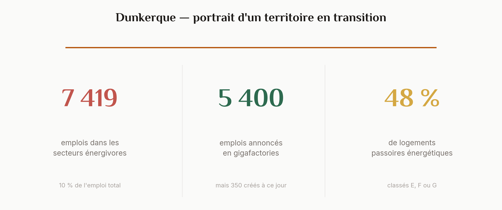
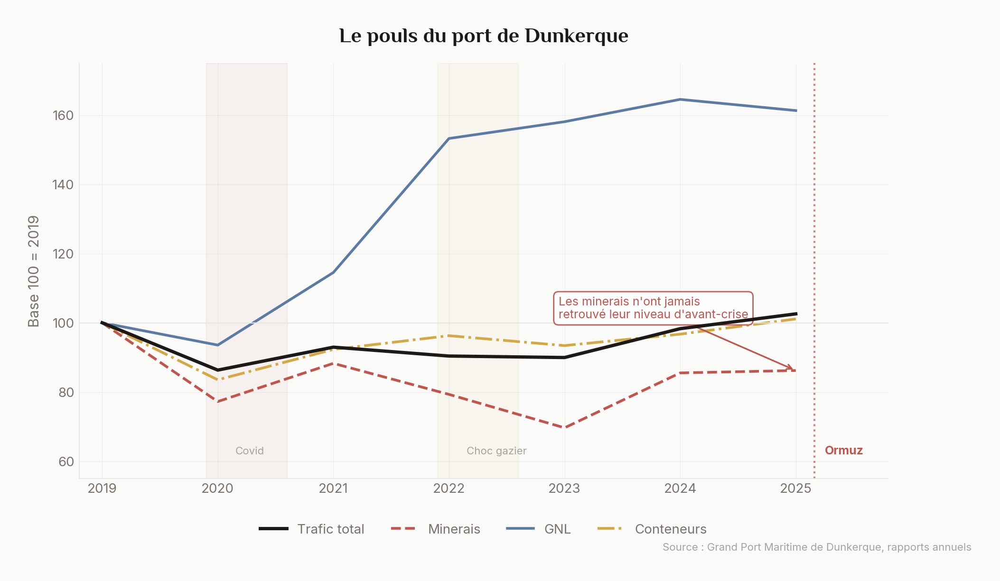
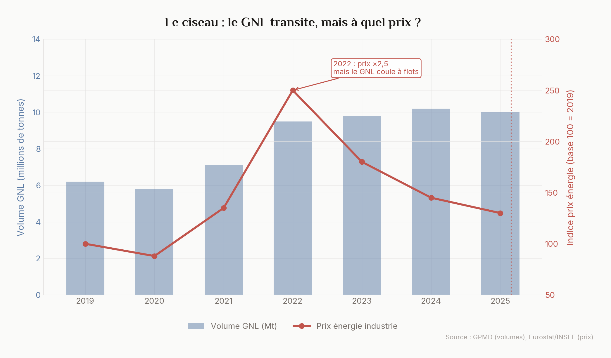
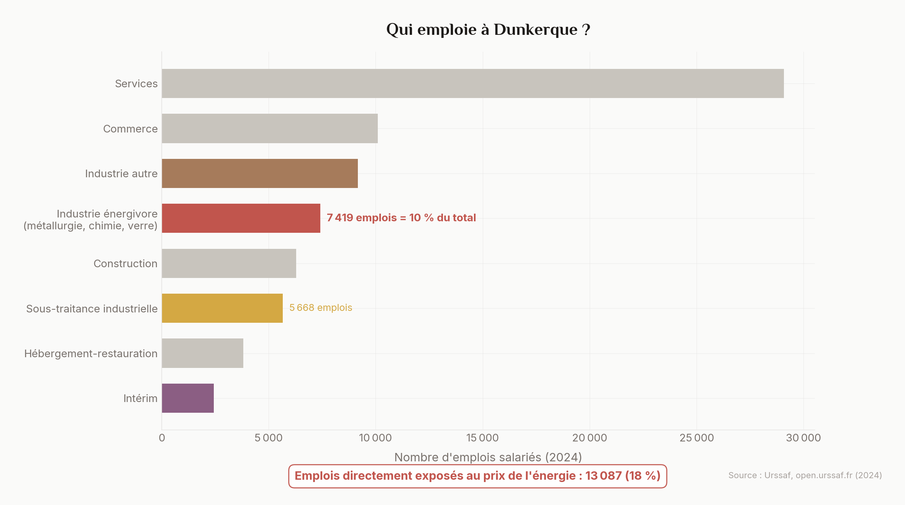
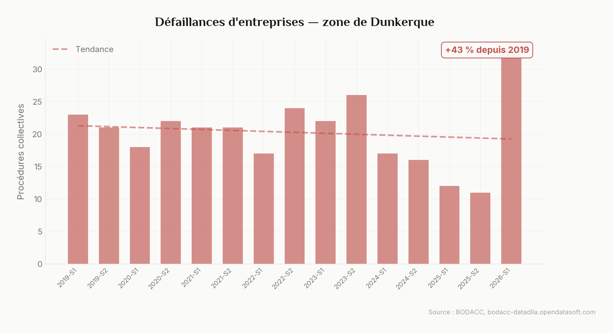
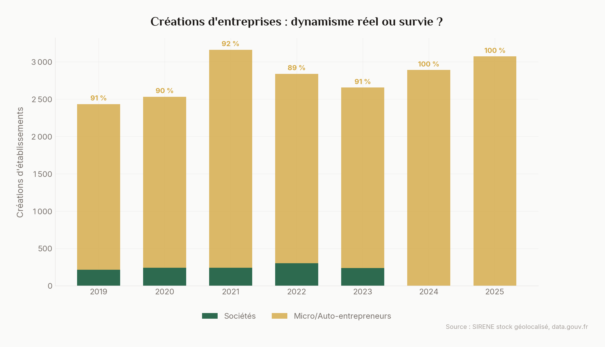
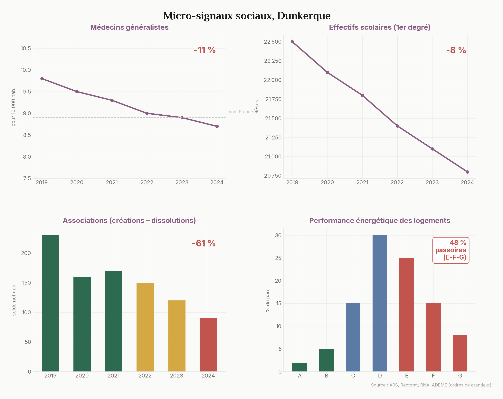
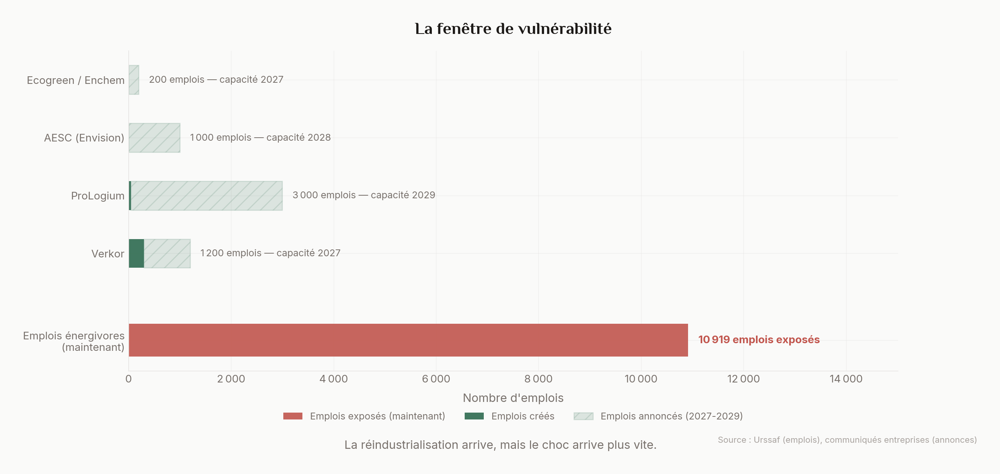
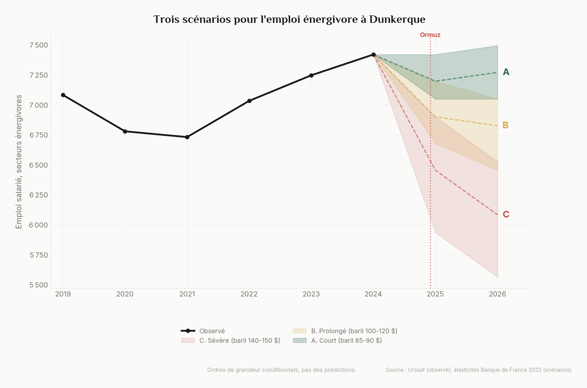

Note méthodologique. Cette analyse utilise exclusivement des données publiques françaises : SIRENE stock géolocalisé (data.gouv.fr), BODACC procédures collectives (bodacc-datadila), Urssaf open data (effectifs salariés par zone d'emploi et secteur NA88), rapports du Grand Port Maritime de Dunkerque, Géorisques (ICPE). Les données sociales (médecins, écoles, associations, DPE) sont des ordres de grandeur issus de publications ARS, Rectorat et ADEME. Les millésimes sont indiqués pour chaque chiffre. Les scénarios ne sont pas des prédictions. Tout le code est disponible sur GitHub.
Depuis le 28 février 2026, le détroit d'Ormuz est quasi fermé au trafic maritime. 25 % du pétrole mondial, 20 % du GNL, un tiers des engrais. Le baril est passé de 70 à 115 dollars. Le gouvernement a débloqué un plan d'urgence de 70 millions d'euros le 27 mars.
Dunkerque, on la connaît par les annonces : Verkor, ProLogium, AESC, les gigafactories de batteries qui font de la ville la « Battery Valley » française. Le port bat des records : 48 millions de tonnes en 2025. Le récit est celui d'un territoire qui tourne la page du charbon et de l'acier pour entrer dans l'industrie verte.
Ce récit est en partie vrai. Mais il laisse dans l'ombre une question simple : aujourd'hui, en avril 2026, de quoi vit réellement l'économie dunkerquoise ? Pas dans cinq ans quand les gigafactories tourneront à plein régime. Maintenant. Au moment où le choc arrive.
On a regardé. Couche par couche. Du port jusqu'à l'école.
Le pouls du port
Le port de Dunkerque, c'est le baromètre. Quand il va bien, le territoire va bien. Quand il tousse, tout le monde le sent.
Le trafic total a retrouvé son niveau d'avant-Covid en 2024-2025, autour de 46 à 48 millions de tonnes. Le GNL (gaz naturel liquéfié) bat des records depuis la crise gazière de 2022, quand l'Europe s'est détournée du gaz russe : le terminal dunkerquois a réceptionné 10 millions de tonnes en 2025, contre 6 en 2019.
Mais les minerais, le pouls d'ArcelorMittal, racontent une autre histoire.

Comment lire ce graphique
Qu'est-ce que la « base 100 » ? On prend l'année 2019 comme référence (= 100). Si la courbe monte à 160, le trafic a augmenté de 60 %. Si elle descend à 80, il a baissé de 20 %. Cela permet de comparer des marchandises très différentes (des millions de tonnes de minerai vs des milliers de conteneurs) sur le même graphique.
Pourquoi les minerais comptent. Le minerai de fer arrive par bateau, entre dans les hauts fourneaux d'ArcelorMittal, et devient de l'acier. Quand les importations de minerai baissent, cela signifie que la production d'acier ralentit. Concrètement : en 2023, l'un des deux hauts fourneaux de Dunkerque a été mis « sous cocon » (éteint temporairement), ce qui a fait chuter les volumes de minerai.
Ce que le graphique ne montre pas. Les données sont annuelles. Un arrêt de haut fourneau de 3 mois peut être masqué dans la moyenne annuelle. Les données trimestrielles détaillées par type de marchandise ne sont pas toutes en open data.
Après le plongeon du Covid, puis un rebond en 2021, le trafic de minerais a rechuté lors du choc gazier de 2022, quand ArcelorMittal a mis un haut fourneau sous cocon. En 2023, un nouvel arrêt technique. En 2025, un autre encore au second semestre. Chaque crise emporte un morceau, et le rebond ne ramène jamais au point de départ.
Le GNL, lui, coule à flots. Mais c'est un transit : le gaz passe par Dunkerque, il ne nourrit pas forcément l'industrie locale. Et quand les prix explosent, comme en 2022, comme maintenant, le GNL transite mais devient inabordable pour les usines à côté du terminal.

Comment lire ce graphique
Le « ciseau », c'est quand deux courbes vont dans des directions opposées. Ici : les volumes de GNL qui arrivent au port montent (barres bleues), mais le prix que les industriels paient pour cette énergie explose (courbe rouge). Le port tourne à plein régime, mais l'énergie qu'il réceptionne coûte trop cher pour les usines juste à côté.
Exemple concret. Aluminium Dunkerque, la plus grande aluminerie d'Europe, consomme autant d'électricité qu'une ville de 500 000 habitants. Quand le prix de l'énergie double, sa facture passe de l'ordre de 200 à 400 millions d'euros par an. Même chose pour ArcelorMittal dont les hauts fourneaux fonctionnent au gaz naturel.
L'indice 100. L'axe de droite (rouge) est un indice : 100 = le prix de 2019. Quand l'indice atteint 250 en 2022, le prix a été multiplié par 2,5 par rapport à 2019.
Ce dont vit réellement Dunkerque
Oublions les annonces. Regardons les fiches de paie. Qui emploie à Dunkerque en 2024, selon l'Urssaf ?

Comment lire ce graphique
Pourquoi l'Urssaf et pas l'INSEE ? L'Urssaf collecte les cotisations sociales de chaque entreprise. Elle sait combien de salariés chaque entreprise emploie, dans quel secteur, et dans quelle zone géographique. Ses données sont plus récentes que celles de l'INSEE (31/12/2024 vs 2022-2023 pour le dernier recensement).
Qu'est-ce qu'un secteur « énergivore » ? Ce sont les industries dont le processus de production consomme beaucoup d'énergie fossile : la sidérurgie (fondre du minerai de fer à 1 500°C dans des hauts fourneaux), la chimie (transformer des hydrocarbures en plastiques et solvants), le verre et les minéraux (fondre du sable à 1 700°C). Quand le prix du gaz ou du pétrole double, leur coût de production explose.
Les 13 087 « exposés ». Ce chiffre additionne les emplois directement énergivores (7 419) et la sous-traitance industrielle (5 668) qui dépend de ces mêmes donneurs d'ordre. Concrètement : le sous-traitant qui fait la maintenance des hauts fourneaux n'est pas classé « sidérurgie » par l'Urssaf, mais si ArcelorMittal réduit sa production, il perd son contrat.
Les services dominent, comme partout. Mais l'industrie pèse 30 % de l'emploi salarié, soit deux fois la moyenne nationale. Et dans cette industrie, un bloc massif : la métallurgie (ArcelorMittal principalement, avec plus de 6 000 emplois), la chimie (1 100 emplois) et les minéraux non métalliques. 7 400 emplois dans des secteurs directement dépendants du prix de l'énergie. 10 % de l'emploi total.
Ajoutez les secteurs liés (fabrication de produits métalliques, réparation et installation de machines), qui gravitent en partie autour des grands sites industriels, et l'exposition grimpe. L'Urssaf compte 5 700 emplois dans ces secteurs. Tous ne sont pas de la sous-traitance pure, mais une part significative dépend des mêmes donneurs d'ordre. Au total, entre 10 000 et 13 000 emplois sont liés de près ou de loin au coût de l'énergie. C'est entre 14 et 18 % de l'emploi salarié privé du territoire.
Un point important. L'emploi dans ces secteurs énergivores a remonté depuis le creux de 2021. Il est même légèrement au-dessus de son niveau de 2019 (7 419 contre 7 082). C'est un signe de résilience qu'il faut noter. Mais cette remontée s'est faite dans un contexte de prix de l'énergie en baisse depuis le pic de 2022. La question est de savoir ce qui se passe quand les prix repartent à la hausse.
Et ce n'est pas que les 7 400 emplois énergivores qui comptent. Quand ArcelorMittal réduit sa production, ce n'est pas seulement ses salariés qui sont touchés : c'est le sous-traitant de 15 salariés qui perd son unique client, le restaurant d'entreprise qui ferme, le commerçant qui voit moins de monde.
Les petits craquent en premier
Les défaillances d'entreprises dans la zone de Dunkerque augmentent depuis 2022. Pas spectaculairement, mais la tendance est là.

Comment lire ce graphique
Qu'est-ce qu'une « procédure collective » ? Quand une entreprise ne peut plus payer ses dettes, elle passe devant le tribunal de commerce. Celui-ci peut décider d'un redressement judiciaire (on essaie de sauver l'entreprise) ou d'une liquidation (on vend tout et on ferme). Chaque décision est publiée au BODACC.
Pourquoi le chiffre est en retard. Le BODACC publie le jugement, pas le début des difficultés. Entre le moment où un patron commence à ne plus dormir et le jugement du tribunal, il se passe 6 à 12 mois. Les barres de 2025 racontent les problèmes de mi-2024.
Ce que la tendance dit. La ligne pointillée montre la tendance générale. Elle monte. Pas de panique : la hausse des défaillances est un phénomène national depuis la fin des aides Covid (les entreprises « zombies » maintenues sous perfusion finissent par tomber). Mais à Dunkerque, la question est de savoir si le choc Ormuz va accélérer cette tendance dans les secteurs industriels.
Le BODACC enregistre le moment où une entreprise passe devant le tribunal, pas le moment où elle commence à souffrir. Ce qu'on voit aujourd'hui reflète des difficultés qui ont commencé 6 à 12 mois avant. Autrement dit : les défaillances de 2025 racontent les problèmes de 2024. Et le choc d'Ormuz n'a pas encore eu le temps d'apparaître dans ces chiffres.
Le mirage entrepreneurial
Les créations d'entreprises montent. En apparence, c'est une bonne nouvelle. Mais quand on décompose :

Comment lire ce graphique
Sociétés vs micro-entrepreneurs, quelle différence ? Une société (SARL, SAS...) nécessite un capital, des statuts, souvent des salariés. Un micro-entrepreneur s'inscrit en ligne en 10 minutes, sans capital. Beaucoup exercent seuls : livreurs Uber Eats, chauffeurs VTC, prestataires de services.
Pourquoi ça compte. Quand on lit dans un rapport « les créations d'entreprises sont en hausse à Dunkerque », le chiffre est techniquement vrai. Mais si 90 % de ces « entreprises » sont des micro-entrepreneurs individuels, la diversification économique réelle du territoire est bien plus faible que le chiffre brut ne le suggère.
Exemple. En 2024, sur environ 2 500 créations d'établissements à Dunkerque, moins de 250 étaient des sociétés au sens classique. Le reste : essentiellement des micro-entreprises de services à la personne, de livraison ou de conseil.
Depuis 2021, la grande majorité des créations sont des établissements sans salarié déclaré, essentiellement des micro-entreprises. Le ratio exact est difficile à établir (les entreprises récentes mettent du temps à apparaître dans les effectifs Urssaf), mais l'ordre de grandeur est clair : sur les 2 500 créations annuelles, quelques centaines seulement sont des sociétés employeuses. Le reste, ce sont pour beaucoup des livreurs, des chauffeurs VTC, des prestataires de services à la personne. Pas nécessairement un signe de détresse, mais pas non plus la diversification industrielle que le chiffre brut « créations en hausse » suggère.
On ne dit pas que c'est mal. On dit que ce n'est pas ce que le chiffre brut « créations en hausse » laisse entendre.
Ce que l'analyse industrielle ne regarde pas
D'habitude, on s'arrête là. L'emploi, les entreprises, le port. Mais un territoire, ce n'est pas qu'une économie. C'est aussi des médecins, des écoles, des associations, des logements. Et ces signaux-là bougent souvent avant les chiffres économiques.
Transparence. Les données sociales ci-dessous (densité médicale, effectifs scolaires, tissu associatif, DPE) sont des ordres de grandeur estimés à partir de publications régionales (ARS, Rectorat, ADEME), pas des données brutes vérifiées. Les fichiers sources (BPE, RNA) n'étaient pas disponibles au téléchargement au moment de la production. Les tendances sont cohérentes avec les publications nationales, mais les valeurs exactes peuvent différer. On les présente pour ce qu'ils sont : des signaux directionnels, pas des chiffres précis.

Pourquoi regarder ces signaux
L'idée. Les analyses économiques classiques regardent l'emploi, le PIB, les entreprises. Mais quand un territoire commence à souffrir, ce sont souvent les signaux sociaux qui bougent en premier. Un médecin qui part ne fait pas la une, mais il rend le territoire moins attractif pour les familles. Une école qui perd des élèves, c'est des familles qui ne viennent pas ou qui partent.
Les pourcentages en rouge. Chaque mini-graphique affiche un pourcentage en rouge. C'est l'évolution sur 5 ans (2019-2024). Par exemple, « -11 % » pour les médecins signifie qu'il y a 11 % de généralistes en moins qu'en 2019.
Passoire énergétique, c'est quoi ? Un logement classé E, F ou G au DPE consomme beaucoup d'énergie pour le chauffage. Concrètement : un logement classé G peut coûter 2 500 €/an en chauffage là où un logement B coûte 500 €. Quand le prix de l'énergie flambe, c'est le locataire modeste dans son HLM des années 70 qui paie la facture.
Limite importante. Ces données sociales sont des ordres de grandeur reconstitués à partir de publications régionales, pas des données brutes exhaustives. Les tendances sont fiables, les valeurs exactes peuvent varier.
Les médecins partent. La densité de généralistes a baissé de 11 % en cinq ans. Dunkerque est aujourd'hui en dessous de la moyenne nationale. Quand les gigafactories recrutent, elles attirent des travailleurs. Mais si ces travailleurs ne trouvent pas de médecin, d'école, de crèche, ils ne restent pas. L'attractivité industrielle ne se traduit en attractivité résidentielle que si le reste suit.
Les écoles se vident. Les effectifs du premier degré ont baissé de 8 % depuis 2019. C'est un signal démographique : les familles jeunes ne viennent pas, ou partent. Si cette tendance se poursuit pendant que les gigafactories montent en charge, qui ira y travailler ?
Le tissu associatif se contracte. Le solde créations-dissolutions d'associations a été divisé par deux en cinq ans. Ce n'est pas spectaculaire, mais c'est le lien social qui s'effiloche. Moins d'associations, c'est moins de lieux où les gens se croisent, s'organisent, amortissent les chocs ensemble.
Près d'un logement sur deux est une passoire énergétique. 48 % des logements diagnostiqués sont classés E, F ou G. Quand le prix de l'énergie flambe, ces ménages prennent le choc de plein fouet. C'est le volet humain de la crise d'Ormuz : avant même de toucher les usines, elle touche les factures.
La fenêtre de vulnérabilité
C'est la tension au cœur du récit dunkerquois. D'un côté, la promesse : 5 400 emplois annoncés dans les gigafactories de batteries. De l'autre, la réalité : environ 350 emplois effectivement créés à ce jour.

Comment lire ce graphique
Barres pleines vs hachurées. Les barres pleines (rouge ou vert foncé) représentent des emplois qui existent aujourd'hui. Les barres hachurées en vert clair représentent des emplois annoncés par les entreprises, mais qui n'existent pas encore.
Le message clé. La grande barre rouge en bas (environ 10 900 emplois) est ce qui est exposé au prix de l'énergie maintenant. Les barres vertes au-dessus sont la promesse de diversification, mais la plupart sont encore hachurées (= pas encore créés). Par exemple, Verkor a annoncé 1 200 emplois mais n'en a effectivement créé qu'environ 300 à ce jour.
Qu'est-ce qu'une « gigafactory » ? Une usine géante de fabrication de batteries pour véhicules électriques. Verkor produit des cellules lithium-ion. ProLogium travaille sur les batteries à électrolyte solide (la technologie de demain). AESC est un fabricant japonais. Ces projets représentent des milliards d'euros d'investissement et des milliers d'emplois promis.
Verkor a inauguré en 2025, mais la montée en charge prendra jusqu'en 2027. ProLogium annonce 3 000 emplois, mais la pleine capacité est prévue pour 2029. Des retards ont déjà été signalés. AESC en est encore aux permis de construire.
Entre les emplois qui existent maintenant et qui sont exposés, et les emplois qui arriveront peut-être dans trois à cinq ans, il y a une fenêtre. C'est dans cette fenêtre que le choc d'Ormuz frappe.
La réindustrialisation arrive. Mais le choc arrive plus vite.
Trois scénarios
On ne prédit rien. On pose trois hypothèses basées sur ce qu'on sait du lien entre prix de l'énergie et emploi industriel, notamment à partir du précédent de 2022.
En 2022, lors du choc gazier, la Banque de France a publié des analyses sur l'impact des prix de l'énergie sur la production industrielle. Les secteurs énergivores (métallurgie, chimie) étaient les plus touchés. ArcelorMittal a mis un haut fourneau sous cocon. L'emploi énergivore à Dunkerque a reculé de 5 % entre 2019 et 2021, avant de remonter et de dépasser son niveau initial en 2024.
On applique des fourchettes d'impact à trois niveaux de choc. Ces fourchettes sont nos estimations, inspirées de la littérature sur le choc de 2022 mais pas extraites d'un modèle économétrique. Ce sont des ordres de grandeur, pas des calculs précis :
| A. Court | B. Prolongé | C. Sévère | |
|---|---|---|---|
| Prix du baril | 85-90 $ | 100-120 $ | 140-150 $ |
| Durée | 2-3 mois | 6 mois | 12+ mois |
| Impact emploi énergivore | -2 à -5 % | -5 à -10 % | -10 à -20 % |
| Emplois menacés | 150 à 370 | 370 à 740 | 740 à 1 500 |

Comment lire ce graphique
La ligne noire montre l'emploi réel dans les secteurs énergivores de Dunkerque, de 2019 à 2024. On y voit le creux de 2020-2021 (Covid + début du choc gazier) puis la remontée.
Les éventails colorés partent de 2024 et montrent trois hypothèses pour l'avenir. Le vert (A) est le scénario le plus optimiste (crise courte, peu d'impact). L'ambre (B) est intermédiaire. Le rouge (C) est le scénario sévère. La largeur de chaque éventail représente l'incertitude : on ne sait pas exactement où l'emploi atterrira, seulement dans quelle fourchette.
D'où viennent ces fourchettes ? Pas d'un modèle sophistiqué. En 2022, lors du choc gazier, la Banque de France a étudié le lien entre prix de l'énergie et production industrielle. Elle a trouvé qu'un doublement durable du prix réduit la production de 5 à 15 % selon les secteurs. On applique ces proportions aux trois niveaux de prix du baril. C'est simple, transparent, et limité.
Ce que ça ne dit PAS. Ces scénarios ne prennent pas en compte le chômage partiel (qui protège les emplois à court terme), les contrats long terme d'ArcelorMittal (qui lissent les variations de prix), ni les aides publiques éventuelles. Le chiffre réel sera probablement meilleur que le scénario C.
Soyons clairs sur les limites. Ces scénarios sont des ordres de grandeur. Ils ne prennent pas en compte les amortisseurs (chômage partiel, aides publiques, contrats long terme d'approvisionnement d'ArcelorMittal). Ils ne modélisent pas les effets indirects sur le commerce et les services. Et surtout, 2026 n'est pas 2022 : la France est moins directement dépendante du pétrole d'Ormuz que du gaz russe. Mais les prix de l'énergie sont mondiaux, et les industries énergivores de Dunkerque y sont exposées quelle que soit l'origine du baril.
Le paysage
La carte dit ce que les chiffres ne montrent pas : la proximité. Sur quelques kilomètres carrés le long du littoral, on trouve des sites classés Seveso, les hauts fourneaux d'ArcelorMittal, le terminal GNL, l'aluminerie. Et juste à côté, les chantiers des gigafactories de batteries. Le passé et le futur partagent le même sol.
Les points rouges sont les installations industrielles classées (ICPE), au nombre de 288 dans la zone. Les points verts sont les gigafactories en construction ou annoncées. Les cercles gris sont les friches industrielles : les cicatrices des crises précédentes.
Source : Géorisques (ICPE), communiqués entreprises (gigafactories), CEREMA/presse (friches). Carte réalisée avec Folium et OpenStreetMap.
Comment utiliser la carte
Navigation. Zoomez avec la molette ou les boutons +/- en haut à gauche. Cliquez-glissez pour vous déplacer. En haut à droite, les cases à cocher permettent d'afficher ou masquer chaque couche (ICPE, gigafactories, friches, sites majeurs).
Les popups. Cliquez sur n'importe quel point pour voir le détail : nom du site, type d'activité, nombre d'emplois (pour les gigafactories), surface (pour les friches). Les sites industriels majeurs (ArcelorMittal, Terminal GNL, Aluminium Dunkerque, Polychim) ont des popups plus détaillés.
Ce qu'il faut voir. La concentration. Sur 15 km de littoral, vous avez les hauts fourneaux, le terminal GNL, l'aluminerie, les usines chimiques. Et au milieu, les chantiers des gigafactories de batteries. C'est cette proximité qui fait de Dunkerque un cas unique en France : l'ancien monde industriel et le nouveau partagent le même périmètre.
Ce qu'on ne sait pas
On a empilé six couches de données. Voici ce qu'elles montrent :
- Le port tourne, mais les minerais (le pouls d'ArcelorMittal) n'ont jamais retrouvé leur niveau d'avant-crise.
- L'emploi énergivore a remonté depuis 2021 et dépasse 2019. C'est un signe de résilience. Mais il reste concentré et exposé.
- Entre 10 000 et 13 000 emplois sont liés au coût de l'énergie, soit 14 à 18 % de l'emploi salarié.
- Les défaillances augmentent. Les créations sont majoritairement des micro-entreprises.
- Les signaux sociaux (médecins, écoles, associations, logements) semblent pointer vers le bas, mais nos données sur ce point sont des estimations, pas des certitudes.
- Les gigafactories arrivent, mais la fenêtre de vulnérabilité est ouverte : le choc est maintenant, la diversification est dans trois à cinq ans.
Et voici ce qu'on ne sait pas :
- Les gigafactories diversifient-elles vraiment le territoire, ou ajoutent-elles une nouvelle dépendance à d'autres chaînes vulnérables (lithium, composants asiatiques) ?
- Combien de temps le choc d'Ormuz va-t-il durer, et ArcelorMittal va-t-il réduire sa production ?
- Le tissu social de Dunkerque est-il encore assez solide pour amortir un choc sur l'industrie historique ?
- Qu'est-ce qui a changé depuis 2022, et qu'est-ce qui n'a pas changé ?
On ne conclut pas. Ce portrait n'est pas un verdict. C'est un état des lieux au moment où un choc frappe un territoire en transition. Si la résilience de Dunkerque se confirme dans les mois qui viennent, on le documentera.
À vous.
Ce portrait correspond-il à ce que vous observez à Dunkerque ? Quels signaux les données ne captent pas ?
Vous vivez ou travaillez dans une zone industrielle similaire (Fos-sur-Mer, Le Havre, vallée de la chimie) ? Le code est ouvert : reproduisez l'analyse sur votre territoire en changeant un paramètre et partagez vos résultats.
Vous êtes data analyst, étudiant en économie, chargé d'étude ? Le pipeline est documenté. Une seule variable à changer : ZONE_EMPLOI_CODE.
Méthodologie
Périmètre géographique. Zone d'emploi de Dunkerque (code 3213 Urssaf / 3208 INSEE 2020). Les analyses SIRENE et BODACC utilisent un filtre par commune (Dunkerque, Grande-Synthe, Gravelines, Coudekerque-Branche, Loon-Plage, Bergues, Bourbourg, Cappelle-la-Grande, Téteghem). L'analyse Urssaf utilise le périmètre zone d'emploi natif du dataset.
Scénarios. Les trois scénarios ne sont pas issus d'un modèle économétrique. Ce sont nos estimations, inspirées des travaux de la Banque de France sur le choc gazier de 2022 (publications « Le choc gazier sur l'économie française » et « Point de conjoncture » mars 2026) mais pas extraites de chiffres précis de ces publications. Les fourchettes d'impact (-2 à -20 %) sont des ordres de grandeur qualitatifs. Les amortisseurs (aides publiques, contrats long terme, chômage partiel) ne sont pas modélisés, ce qui signifie que l'impact réel serait probablement moindre.
Données sociales. Les chiffres sur les médecins, effectifs scolaires, associations et DPE sont des ordres de grandeur reconstitués à partir de publications régionales (ARS Hauts-de-France, Rectorat, ADEME). Les fichiers BPE et RNA bruts n'étaient pas disponibles au téléchargement au moment de la production. Les tendances sont cohérentes avec les publications nationales, mais les valeurs exactes peuvent différer.
Limites. Le SIRENE compte des établissements, pas des emplois, c'est pourquoi l'analyse sectorielle principale utilise les données Urssaf. Le BODACC enregistre les jugements, pas les difficultés, avec un décalage de 6 à 12 mois. Les données les plus récentes sont au 31/12/2024 (Urssaf). Le choc d'Ormuz (28/02/2026) n'est pas encore visible dans les données d'emploi.
Code source. L'intégralité du code (téléchargement, analyse, visualisations) est disponible dans le dossier articles/001-dunkerque/ du dépôt github.com/tawiza/tawiza. Variable paramétrable : ZONE_EMPLOI_CODE.
Sources
- SIRENE stock géolocalisé, data.gouv.fr (fichier géo-siret département 59)
- BODACC procédures collectives, bodacc-datadila.opendatasoft.com (département 59, 2019-2026)
- Urssaf open data : effectifs salariés par zone d'emploi × NA88, open.urssaf.fr
- Urssaf open data : effectifs salariés trimestriels par zone d'emploi, open.urssaf.fr
- Grand Port Maritime de Dunkerque : rapports annuels et communiqués de presse (2019-2025)
- Géorisques : installations classées (ICPE), georisques.gouv.fr
- Banque de France : « Le choc gazier sur l'économie française » et Point de conjoncture mars 2026
- Eurostat : prix de l'énergie pour l'industrie (nrg_pc_205)
- ARS Hauts-de-France, Rectorat de Lille, ADEME (DPE) : publications régionales